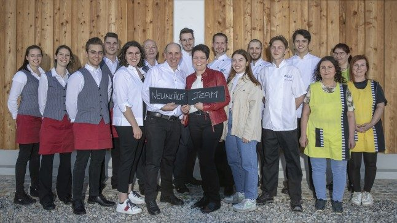

Wirtshaus-Feeling pur
Unsere gemütliche Gaststube – der Ort für das Mittagessen unter der Woche, das Achterl am Abend und das lange Gespräch danach.
Unverbindliche Gestaltungs-Vorschau · keine offizielle Website der Gastwirtschaft Neunläuf · erstellt von AVOS Solutions
Gastwirtschaft seit Generationen · Hobersdorf | Wilfersdorf
Kommen Sie ins Neunläuf und überzeugen Sie sich von unserem einzigartigen Wohlfühl-Ambiente. Lassen Sie sich auf den kulinarischen Genuss ein und genießen Sie unser herausragendes Service. Wir freuen uns auf Sie – Familie Krammer & das Neunläuf-Team.
Auszeichnung
Wir wurden von der NÖ Wirtshauskultur zum TOP-Wirt Weinviertel 2022/23 gekürt. Wir freuen uns sehr über diese Auszeichnung – vielen Dank an unsere Mitarbeiter und Gäste!
Dazu kommt das AMA-Gastrosiegel für die konsequente Verwendung von Produkten aus der Region und aus Österreich. Im Wirtshausführer sind wir mit dem Vermerk „Nachhaltig Wirten“ und einer Sommelerie vom Feinsten gelistet. Und im ORF war das Neunläuf in „NÖ Heute – Köstlich Kulinarisch“ zu Gast.
Wann wir da sind
Vier Räume, ein Wirtshaus
Unsere gemütliche Gaststube – der Ort für das Mittagessen unter der Woche, das Achterl am Abend und das lange Gespräch danach.
Unser neu gestaltetes Extrazimmer: unkompliziert und authentisch – ideal für Runden, die unter sich sein wollen.
Von den ersten Sonnenstrahlen im Frühling bis in den Herbst: unsere schattige Terrasse im Grünen.
Einzigartig im Weinviertel – der historische Tanzstadl im Neunläuf-Garten, Bühne für Jazz-Sonntage, Feste und Feiern.
Küche | Keller
… stehen in unserer Küche an oberster Stelle. Wir achten beim Einkauf darauf, dass Fleisch, Obst und Gemüse immer frisch und von bester Qualität sind.
Mittwoch, Donnerstag und Freitag bieten wir zusätzlich einen Tagesteller an. Den Plan schicken wir Ihnen gerne per E-Mail zu.
In unserem Weinkeller lagern wir eine Auswahl bester Weinviertler Qualitätsweine. Bei einer jährlichen Verkostung werden die Neunläufwinzer des Jahres ermittelt. Die Weine der Woche servieren wir bouteillen- oder glasweise – und wer möchte, sucht sich sein Tröpferl im Keller selbst aus.
Der Tanzstadl aus dem Jahr 1866 – unser Wahrzeichen im Garten, umstanden von den Linden.
Nächste Termine 2026
Zwei Wochen Gansl – die klassische Zeit im Wirtshaus. Reservierung empfohlen.
Der traditionelle Abend, an dem um den Striezel gepascht wird.
Unser großer Abend zum Jahresausklang – bereits ausgebucht. Setzen Sie sich auf die Warteliste.

Gastgeber
Ruth & Roland, Stefanie und Katharina Krammer – dazu ein Team, das seit Jahren zusammenhält. Roland Krammer ist Wirt und Sommelier in einer Person.
Wir freuen uns auf Sie.
Bis bald im Neunläuf!
Gut zu wissen